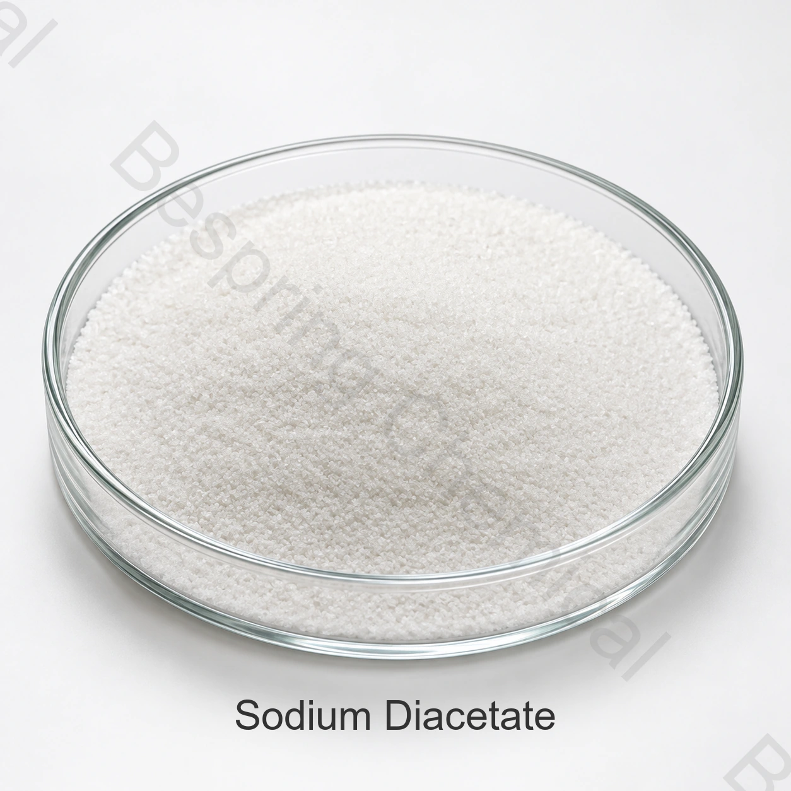

食品級雙乙酸鈉供應商
請求E262(ii)身份，遊離乙酸，醋酸鈉，水分，pH值和汙染物的COA結果。
食品級成分 · 防腐劑，酸度調節劑和香料成分 · E262(ii)

產品圖片 · 訂購時請確認等級與包裝
食品級雙乙酸鈉將醋酸鈉和乙酸結合在乾料中，用於選定食品中的酸度控制、醋味和儲存。
分享應用、關鍵指標限值、試驗方法、數量、包裝和目的地。
資格範圍可根據要求提供猶太教、清真和 ISO 文件
參考包裝25公斤紙袋或客戶要求的包裝
集裝箱裝載22噸不帶托盤;20噸帶托盤/20GP
批次證明規格和COA可根據要求提供
產品概述
食品級雙乙酸鈉是醋酸鈉和乙酸的分子化合物，識別為INS 262(ii ) 。在溶液中提供乙酸緩衝和乙酸功能，使等級組成和pH值成為重要的採購標準。
商業適用性取決於確切的等級、來源、測試方法、預期功能和目的地市場的規則。現行簽署的規格和批次COA管理每筆交易。
採購核查清單
使用這些資格點時，比較中國供應商，製造商來源，分銷商提供，大宗報價或樣品.
請求E262(ii)身份，遊離乙酸，醋酸鈉，水分，pH值和汙染物的COA結果。
驗證微生物障礙設計、味道影響、製程致死性、包裝和當地最大使用規則。
評估乾醋的味道、酸度平衡、吸溼性和混合均勻性。
份額數量、托盤偏好、目的地港口以及是否需要20或22噸參考裝載。
應用評估
這些是配方領域，而不是普遍批准或劑量建議。確認合法用途和完整成品食品的效能。
支援酸度和防腐障礙，同時提供醋味;在整個過程中進行驗證。
在合適的醬汁系統中提供乾醋酸功能和緩衝。
用於乾醋式調味系統和粉末調味混合物。
在法律允許和感官可接受的情況下，可以支援黴菌控制計劃。
評估pH值的貢獻和與熱處理和包裝的相容性。
可能有助於調節選定配方中的酸度和儲存。
已提供的技術資料
以下為商業參考規格，與批次 COA 及法規要求分開使用。
可橫向滑動或使用鍵盤查看完整表格
| 檢測專案 | 規格 |
|---|---|
| 外觀 | 白色粉末 |
| 遊離乙酸(CH3COOH) | 39.0-41.0% |
| 乙酸鈉(CH3COONa) | 58.0-60.0% |
| 水分 | ≤2.0% |
| pH值，10%水溶液 | 4.5-5.0 |
| 甲酸和易氧化物質 | ≤0.2% |
| 鉛(Pb) | ≤2 mg/kg |
| 砷(As) | ≤3 mg/kg |
| 替代限值 | 根據客戶要求 |
規格說明： 表格轉載了所提供的商業限值。法典規定因食品類別和目的地市場而異;它們不是通用的劑量建議。確認在簽署的規格上游離乙酸、乙酸鈉、水分和可氧化物質的分析方法。
技術選型
遊離乙酸和乙酸鈉的比例影響酸度、味道和緩衝。
防腐劑的效能取決於整個障礙系統，而不是單獨雙乙酸鈉。
試驗測試醋的濃度和與煙、香料或鹹味的任何相互作用。
保護吸溼性粉末免受潮溼的影響，並確認袋子襯裡、托盤和倉庫條件。
採購評估支援
請求現行簽署的規格或 TDS、SDS、測試方法和代表或批次 COA。
驗證適用的猶太教、清真、ISO 和食品安全文件，以確定準確的等級、來源和製造地點。
參閱 Codex GSFA 雙乙酸鈉記錄 對於身份上下文，則應單獨應用目的地市場的規則。
儲存與操作
採購常見問題
雙乙酸鈉用於選定的食品配方作為防腐劑，酸度調節劑和香料成分功能。必須確認適用性、合法用途和劑量，以適應準確的成品食品和目標市場。
雙乙酸鈉由CAS 126-96-5和INS 262(ii)識別。確認所供應的準確等級和現行市場規則。
所提供的參考最小訂單數量為500公斤。應確認所選等級的樣品、試驗和商業供應情況。
供應參考包裝為25公斤紙袋或客戶要求的包裝。在報價中確認襯套、托盤、標記和集裝箱裝載。
提供食品應用、目標規格和測試方法、數量、顆粒或等級偏好、目的地、托盤要求、證書和所需交貨日期。
按規格要求採購
分享相關批次供應提案的應用、目標等級和限制、數量、包裝、目的地和所需文件。
請提供產品等級和目的地市場，以便確認適用於該訂單的資料。
外部參考資料不等於批次分析證書或百泉產品規格書。